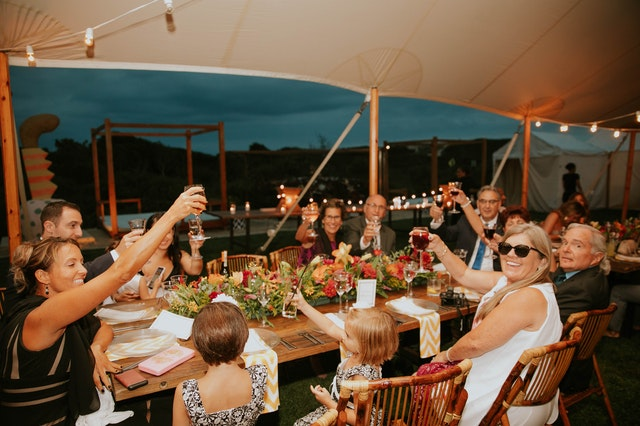
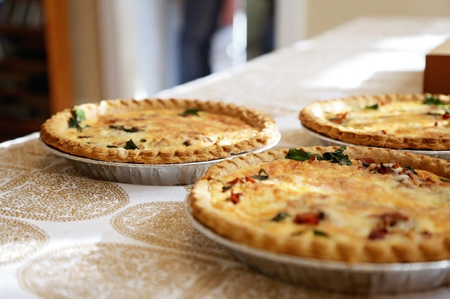

My name is Colette and I love to cook and taste new food! I live in San Francisco with my family. What I love about this city by the bay is to go to other neighborhoods and experience the city’s incredible variety of cuisine available. Cooking is one of my favorite hobbies and I love being in my kitchen, cooking and trying new recipes on my family and friends! Food brings people together and there is nothing more precious than spending time with family and friends over a meal!
“If you really want to make a friend, go to someone's house and eat with him...the people who give you their food give you their heart."
Cesar Chavez"Cooking is all about people. Food is maybe the only universal thing that really has the power to bring everyone together. No matter what culture, everywhere around the world, people eat together." - Guy Fieri
https://www.delish.com/food/g25438962/food-quotes/?slide=12 https://hips.hearstapps.com/hmg-prod.s3.amazonaws.com/images/international-1544216620.png?crop=1xw:1xh;center,top&resize=980:*
I am going to share with you one of my favorite recipes. It is called Quiche Lorraine and it is very easy to make even if you have no idea how to cook. There’s nothing to it! Let me take you by the hand and show you!
About Quiche Lorraine (Link)pronounced “Keesh” in English
Quiche Lorraine is a classic French dish and is a regional specialty from the Lorraine area in northeast France. It is a savory dish that you can have for breakfast, lunch or dinner and is best paired with a nice salad. It resembles a pie and is light and fluffy. It is made up of a pie crust and a delicious filling made of:
You can make your own pie crust crusthttps://www.jocooks.com/recipes/pie-crust-recipe/ or you can use a store bought frozen pie crust. For this recipe, I will make it easy for you and use a store-bought pie crust. The Quiche only takes 30mins to prepare and 1 hr. 15 mins to cook in the oven.
There are lots of variations of Quiche e.g.
Quiche is very versatile because you can vary the ingredients to your own taste. Other ingredients you can add are:
(If you add these, it is no longer a Quiche Lorraine, it is just a Quiche!)
And now… here’s how you make Quiche Lorraine! These are the ingredients you will need…. nothing too complicated!
Storage - Quiche can be saved to eat another day. It can be stored in an airtight container in the fridge for 3 to 4 days. You can also freeze it for 3 to 4 months. Because it is a custard, quiche must be refrigerated within two hours of cooling.
Reheat - Cover quiche with aluminum foil and bake it in an oven preheated at 325 F degrees for about 15 minutes.
Please keep in mind that nutritional information is a rough estimate and can vary greatly based on products used.
I really hope you enjoy your Quiche Lorraine. As you can see, it is so easy to make. Your friends and family will be so impressed with your cooking skills and will really enjoy your Quiche Lorraine!